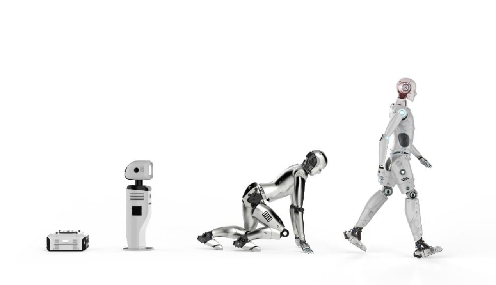

Robotics: The Interesting Parts
of it's history.
By Anonymous
Last Updated on May 31, 2023

The Future of Industrial Revolution and Early
Table Of Contents
Industrial Revolution and Early Robotics
Rise of Robotics in the 20th Century
Robotics and AI impact
Ancient civilizations, such as the Egyptians, Greeks, and Chinese, were captivated by the idea of building mechanical
devices that imitated human or animal movements.
These early automatons were often powered by
simple mechanisms like water, steam, or clockwork.
One notable example is the "Irrigation Device" invented by the ancient Egyptians around 250 BCE. This automaton used
a series of water-filled vessels and valves to simulate a flowing river showcasing their understanding of hydraulics.
The Middle Ages witnessed significant progress in the development of mechanical automata. These devices, often
found in churches and royal courts, were designed for entertainment and religious purposes.
The Future of Industrial Revolution and Early
Robotics
The Industrial Revolution, which began in the 18th century in Britain, marked
a shift from manual labor to machine-based manufacturing.
The rise of factories and mass production created a demand for automated systems that could perform repetitive
tasks more efficiently than human workers.
This need for increased productivity and efficiency fueled the
development of early robotic devices.
The concept of programmable machines emerged during the Industrial Revolution, setting
the stage for the early automation of tasks.
The development of the Jacquard loom, invented by Joseph-Marie Jacquard
in the early 19th century, represented a significant leap forward.
These early mechanical robots and programmable machines marked significant milestones in the development of
robotics demonstrated the potential for machines to replicate human actions, paving the way for future advancements in the field.
Rise of Robotics in the 20th Century
The outbreak of World War II brought about an increased demand for automated systems to assist in military operations.
During this time, significant advancements were made in the field of telecommunications, computing, and control systems,
laying the foundation for future developments in robotics.
One notable example is the development of the first electronic digital computers, such as the Colossus and ENIAC. These
machines were used for code-breaking and complex calculations, demonstrating the potential for electronic devices to process information.
Additionally, the development of guided missile systems and the use of remotely operated vehicles for bomb disposal
showcased early applications of robotic technology in warfare.
The concept of artificial intelligence (AI) emerged in the mid-20th century, laying the groundwork for advancements in
robotics. Influential figures such as Alan Turing and John McCarthy played significant roles in the development
of AI as a field of study.
Impact on understanding the human nature?
In summary, the evolution of robotics and artificial intelligence has a multifaceted impact on
our understanding of human nature and our place in the world.
It challenges our concepts of labor,
cognition, consciousness, ethics, and emotions.
As we witness the rapid advancement of technology,
it becomes increasingly important to critically examine the implications of
these advancements and ensure that our understanding of human nature and our role
in the world continues to evolve alongside these transformative technologies.
Robotics has significantly impacted various industries, ranging from manufacturing to healthcare, and has transformed the way we live and work.
The history of robotics is a long and fascinating journey that has seen significant advancements in technology and innovation. From basic robotic arms to complex humanoid robots with advanced sensors and AI capabilities, robotics has come a long way.